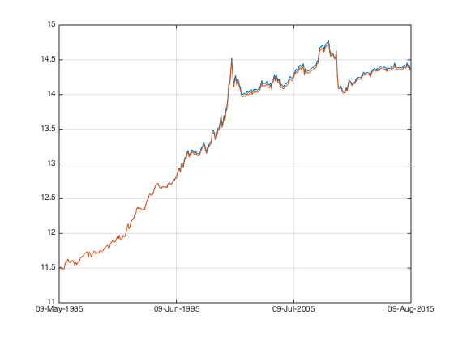
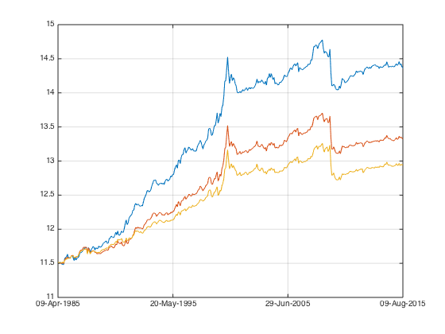

Mom Practical 2
This is the last of Simple Momentum Factor series. It will deal the practical issues.
Contents
Sequential backtest
load the data
load('data_equity_list_us.mat'); load('data_field_list.mat'); load('data_historical_data_us.mat'); index = datasample(1:1300,1000,'Replace',false); px = fun_load_price(history_us, equity_list_us, index); px = fun_clean_data(px); mom_ts = fun_calculate_mom(px);
portfolio weight
portfolio_weight_ts = fun_portfolio_weight(mom_ts,'topmlongonly',0.1);
construct a equal weighted index for hedging.
portfolio_weight_eq_weight_ts = fun_portfolio_weight(mom_ts,'equalweight'); portfolio_rt_ts = fun_portfolio_return(px, portfolio_weight_eq_weight_ts); index = [100; 100*exp(fts2mat(cumsum(portfolio_rt_ts)))]; index_ts = fints(px.dates, index,'EqualWeightIndex');
let's go sequential
initial_capital = 100000; history_dates = px.dates; % what I will do is: at end of each month. I take a look at my capital, % and rebalance the portfolio according to the portfolio weight at that time.
initialize record holders.
current_capital = initial_capital; portfolio_capital(1) = initial_capital; i=1; while i <= size(history_dates,1)-1 % on this day disp(sprintf('on %d %s', i,datestr(history_dates(i)))); current_date = datestr(history_dates(i)); current_px = fts2mat(px(current_date)); current_pw = fts2mat(portfolio_weight_ts(current_date)); current_index = fts2mat(index_ts(current_date)); % this is the long position I take current_position = current_capital*current_pw./current_px; % this is the short position I take current_hedge_position = current_capital/current_index; % to make sure no leakage due to current_pw available but current_px nan current_position = (current_capital/nansum(current_position.*current_px))*current_position; % time goes on till the next month end. % what's my pnl? next_date = datestr(history_dates(i+1)); next_px = fts2mat(px(next_date)); next_index = fts2mat(index_ts(next_date)); pnl_long = nansum(current_position.*(next_px-current_px)); pnl_short = -current_hedge_position*(next_index - current_index); % update account. current_capital = current_capital + pnl_long + pnl_short; % turn the page i = i+1; % keep a record portfolio_capital(i) = current_capital; end portfolio_capital_ts = fints(px.dates,portfolio_capital','PortfolioCapitalWalkforward');
on 1 09-Apr-1985 on 2 09-May-1985 on 3 09-Jun-1985 on 4 09-Jul-1985 on 5 09-Aug-1985 on 6 09-Sep-1985 on 7 09-Oct-1985 on 8 09-Nov-1985 on 9 09-Dec-1985 on 10 09-Jan-1986 on 11 09-Feb-1986 on 12 09-Mar-1986 on 13 09-Apr-1986 on 14 09-May-1986 on 15 09-Jun-1986 on 16 09-Jul-1986 on 17 09-Aug-1986 on 18 09-Sep-1986 on 19 09-Oct-1986 on 20 09-Nov-1986 on 21 09-Dec-1986 on 22 09-Jan-1987 on 23 09-Feb-1987 on 24 09-Mar-1987 on 25 09-Apr-1987 on 26 09-May-1987 on 27 09-Jun-1987 on 28 09-Jul-1987 on 29 09-Aug-1987 on 30 09-Sep-1987 on 31 09-Oct-1987 on 32 09-Nov-1987 on 33 09-Dec-1987 on 34 09-Jan-1988 on 35 09-Feb-1988 on 36 09-Mar-1988 on 37 09-Apr-1988 on 38 09-May-1988 on 39 09-Jun-1988 on 40 09-Jul-1988 on 41 09-Aug-1988 on 42 09-Sep-1988 on 43 09-Oct-1988 on 44 09-Nov-1988 on 45 09-Dec-1988 on 46 09-Jan-1989 on 47 09-Feb-1989 on 48 09-Mar-1989 on 49 09-Apr-1989 on 50 09-May-1989 on 51 09-Jun-1989 on 52 09-Jul-1989 on 53 09-Aug-1989 on 54 09-Sep-1989 on 55 09-Oct-1989 on 56 09-Nov-1989 on 57 09-Dec-1989 on 58 09-Jan-1990 on 59 09-Feb-1990 on 60 09-Mar-1990 on 61 09-Apr-1990 on 62 09-May-1990 on 63 09-Jun-1990 on 64 09-Jul-1990 on 65 09-Aug-1990 on 66 09-Sep-1990 on 67 09-Oct-1990 on 68 09-Nov-1990 on 69 09-Dec-1990 on 70 09-Jan-1991 on 71 09-Feb-1991 on 72 09-Mar-1991 on 73 09-Apr-1991 on 74 09-May-1991 on 75 09-Jun-1991 on 76 09-Jul-1991 on 77 09-Aug-1991 on 78 09-Sep-1991 on 79 09-Oct-1991 on 80 09-Nov-1991 on 81 09-Dec-1991 on 82 09-Jan-1992 on 83 09-Feb-1992 on 84 09-Mar-1992 on 85 09-Apr-1992 on 86 09-May-1992 on 87 09-Jun-1992 on 88 09-Jul-1992 on 89 09-Aug-1992 on 90 09-Sep-1992 on 91 09-Oct-1992 on 92 09-Nov-1992 on 93 09-Dec-1992 on 94 09-Jan-1993 on 95 09-Feb-1993 on 96 09-Mar-1993 on 97 09-Apr-1993 on 98 09-May-1993 on 99 09-Jun-1993 on 100 09-Jul-1993 on 101 09-Aug-1993 on 102 09-Sep-1993 on 103 09-Oct-1993 on 104 09-Nov-1993 on 105 09-Dec-1993 on 106 09-Jan-1994 on 107 09-Feb-1994 on 108 09-Mar-1994 on 109 09-Apr-1994 on 110 09-May-1994 on 111 09-Jun-1994 on 112 09-Jul-1994 on 113 09-Aug-1994 on 114 09-Sep-1994 on 115 09-Oct-1994 on 116 09-Nov-1994 on 117 09-Dec-1994 on 118 09-Jan-1995 on 119 09-Feb-1995 on 120 09-Mar-1995 on 121 09-Apr-1995 on 122 09-May-1995 on 123 09-Jun-1995 on 124 09-Jul-1995 on 125 09-Aug-1995 on 126 09-Sep-1995 on 127 09-Oct-1995 on 128 09-Nov-1995 on 129 09-Dec-1995 on 130 09-Jan-1996 on 131 09-Feb-1996 on 132 09-Mar-1996 on 133 09-Apr-1996 on 134 09-May-1996 on 135 09-Jun-1996 on 136 09-Jul-1996 on 137 09-Aug-1996 on 138 09-Sep-1996 on 139 09-Oct-1996 on 140 09-Nov-1996 on 141 09-Dec-1996 on 142 09-Jan-1997 on 143 09-Feb-1997 on 144 09-Mar-1997 on 145 09-Apr-1997 on 146 09-May-1997 on 147 09-Jun-1997 on 148 09-Jul-1997 on 149 09-Aug-1997 on 150 09-Sep-1997 on 151 09-Oct-1997 on 152 09-Nov-1997 on 153 09-Dec-1997 on 154 09-Jan-1998 on 155 09-Feb-1998 on 156 09-Mar-1998 on 157 09-Apr-1998 on 158 09-May-1998 on 159 09-Jun-1998 on 160 09-Jul-1998 on 161 09-Aug-1998 on 162 09-Sep-1998 on 163 09-Oct-1998 on 164 09-Nov-1998 on 165 09-Dec-1998 on 166 09-Jan-1999 on 167 09-Feb-1999 on 168 09-Mar-1999 on 169 09-Apr-1999 on 170 09-May-1999 on 171 09-Jun-1999 on 172 09-Jul-1999 on 173 09-Aug-1999 on 174 09-Sep-1999 on 175 09-Oct-1999 on 176 09-Nov-1999 on 177 09-Dec-1999 on 178 09-Jan-2000 on 179 09-Feb-2000 on 180 09-Mar-2000 on 181 09-Apr-2000 on 182 09-May-2000 on 183 09-Jun-2000 on 184 09-Jul-2000 on 185 09-Aug-2000 on 186 09-Sep-2000 on 187 09-Oct-2000 on 188 09-Nov-2000 on 189 09-Dec-2000 on 190 09-Jan-2001 on 191 09-Feb-2001 on 192 09-Mar-2001 on 193 09-Apr-2001 on 194 09-May-2001 on 195 09-Jun-2001 on 196 09-Jul-2001 on 197 09-Aug-2001 on 198 09-Sep-2001 on 199 09-Oct-2001 on 200 09-Nov-2001 on 201 09-Dec-2001 on 202 09-Jan-2002 on 203 09-Feb-2002 on 204 09-Mar-2002 on 205 09-Apr-2002 on 206 09-May-2002 on 207 09-Jun-2002 on 208 09-Jul-2002 on 209 09-Aug-2002 on 210 09-Sep-2002 on 211 09-Oct-2002 on 212 09-Nov-2002 on 213 09-Dec-2002 on 214 09-Jan-2003 on 215 09-Feb-2003 on 216 09-Mar-2003 on 217 09-Apr-2003 on 218 09-May-2003 on 219 09-Jun-2003 on 220 09-Jul-2003 on 221 09-Aug-2003 on 222 09-Sep-2003 on 223 09-Oct-2003 on 224 09-Nov-2003 on 225 09-Dec-2003 on 226 09-Jan-2004 on 227 09-Feb-2004 on 228 09-Mar-2004 on 229 09-Apr-2004 on 230 09-May-2004 on 231 09-Jun-2004 on 232 09-Jul-2004 on 233 09-Aug-2004 on 234 09-Sep-2004 on 235 09-Oct-2004 on 236 09-Nov-2004 on 237 09-Dec-2004 on 238 09-Jan-2005 on 239 09-Feb-2005 on 240 09-Mar-2005 on 241 09-Apr-2005 on 242 09-May-2005 on 243 09-Jun-2005 on 244 09-Jul-2005 on 245 09-Aug-2005 on 246 09-Sep-2005 on 247 09-Oct-2005 on 248 09-Nov-2005 on 249 09-Dec-2005 on 250 09-Jan-2006 on 251 09-Feb-2006 on 252 09-Mar-2006 on 253 09-Apr-2006 on 254 09-May-2006 on 255 09-Jun-2006 on 256 09-Jul-2006 on 257 09-Aug-2006 on 258 09-Sep-2006 on 259 09-Oct-2006 on 260 09-Nov-2006 on 261 09-Dec-2006 on 262 09-Jan-2007 on 263 09-Feb-2007 on 264 09-Mar-2007 on 265 09-Apr-2007 on 266 09-May-2007 on 267 09-Jun-2007 on 268 09-Jul-2007 on 269 09-Aug-2007 on 270 09-Sep-2007 on 271 09-Oct-2007 on 272 09-Nov-2007 on 273 09-Dec-2007 on 274 09-Jan-2008 on 275 09-Feb-2008 on 276 09-Mar-2008 on 277 09-Apr-2008 on 278 09-May-2008 on 279 09-Jun-2008 on 280 09-Jul-2008 on 281 09-Aug-2008 on 282 09-Sep-2008 on 283 09-Oct-2008 on 284 09-Nov-2008 on 285 09-Dec-2008 on 286 09-Jan-2009 on 287 09-Feb-2009 on 288 09-Mar-2009 on 289 09-Apr-2009 on 290 09-May-2009 on 291 09-Jun-2009 on 292 09-Jul-2009 on 293 09-Aug-2009 on 294 09-Sep-2009 on 295 09-Oct-2009 on 296 09-Nov-2009 on 297 09-Dec-2009 on 298 09-Jan-2010 on 299 09-Feb-2010 on 300 09-Mar-2010 on 301 09-Apr-2010 on 302 09-May-2010 on 303 09-Jun-2010 on 304 09-Jul-2010 on 305 09-Aug-2010 on 306 09-Sep-2010 on 307 09-Oct-2010 on 308 09-Nov-2010 on 309 09-Dec-2010 on 310 09-Jan-2011 on 311 09-Feb-2011 on 312 09-Mar-2011 on 313 09-Apr-2011 on 314 09-May-2011 on 315 09-Jun-2011 on 316 09-Jul-2011 on 317 09-Aug-2011 on 318 09-Sep-2011 on 319 09-Oct-2011 on 320 09-Nov-2011 on 321 09-Dec-2011 on 322 09-Jan-2012 on 323 09-Feb-2012 on 324 09-Mar-2012 on 325 09-Apr-2012 on 326 09-May-2012 on 327 09-Jun-2012 on 328 09-Jul-2012 on 329 09-Aug-2012 on 330 09-Sep-2012 on 331 09-Oct-2012 on 332 09-Nov-2012 on 333 09-Dec-2012 on 334 09-Jan-2013 on 335 09-Feb-2013 on 336 09-Mar-2013 on 337 09-Apr-2013 on 338 09-May-2013 on 339 09-Jun-2013 on 340 09-Jul-2013 on 341 09-Aug-2013 on 342 09-Sep-2013 on 343 09-Oct-2013 on 344 09-Nov-2013 on 345 09-Dec-2013 on 346 09-Jan-2014 on 347 09-Feb-2014 on 348 09-Mar-2014 on 349 09-Apr-2014 on 350 09-May-2014 on 351 09-Jun-2014 on 352 09-Jul-2014 on 353 09-Aug-2014 on 354 09-Sep-2014 on 355 09-Oct-2014 on 356 09-Nov-2014 on 357 09-Dec-2014 on 358 09-Jan-2015 on 359 09-Feb-2015 on 360 09-Mar-2015 on 361 09-Apr-2015 on 362 09-May-2015 on 363 09-Jun-2015 on 364 09-Jul-2015
compare results:
portfolio_weight_ts = fun_portfolio_weight(mom_ts,'topm',0.1); portfolio_rt_ts = fun_portfolio_return(px, portfolio_weight_ts); plot(log(portfolio_capital_ts)); legend('off'); hold on; plot(log(initial_capital*exp(cumsum(portfolio_rt_ts)))); legend('off'); hold off; snapnow;
as expected.
let's package sequential testing into a function as well.
portfolio_weight_1_ts = fun_portfolio_weight(mom_ts,'topmlongonly',0.1); portfolio_weight_2_ts = fun_portfolio_weight(mom_ts,'topmlongonly',0.2); portfolio_weight_3_ts = fun_portfolio_weight(mom_ts,'topmlongonly',0.3); portfolio_1_ts = fun_sequential_backtest(100000,px,index_ts,portfolio_weight_1_ts); portfolio_2_ts = fun_sequential_backtest(100000,px,index_ts,portfolio_weight_2_ts); portfolio_3_ts = fun_sequential_backtest(100000,px,index_ts,portfolio_weight_3_ts); plot(log(portfolio_1_ts)); legend('off'); hold on; plot(log(portfolio_2_ts)); legend('off'); hold on; plot(log(portfolio_3_ts)); legend('off'); hold off; sqrt(12)*sharpe(fts2mat(tick2ret(portfolio_1_ts)),0) sqrt(12)*sharpe(fts2mat(tick2ret(portfolio_2_ts)),0) sqrt(12)*sharpe(fts2mat(tick2ret(portfolio_3_ts)),0)
ans =
0.6372
ans =
0.5121
ans =
0.4633
